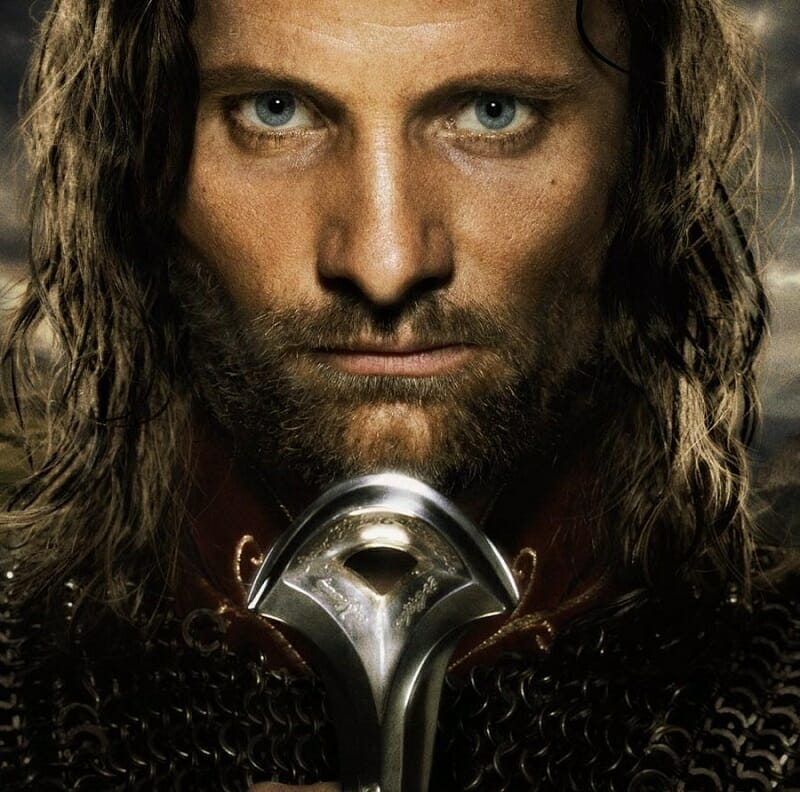

<div class="card" style="width: 18rem;">
    
    <div class="card-body">
      <h5 class="card-title">Aragorn Elessar</h5>
      <p class="card-text">Viggo Mortensen</p>
      <p class="card-text">Aragorn, filho de Arathorn, também conhecido como Passo-Longo; foi o líder dos Dunedain do norte de Arnor e após a derrota de Sauron, Rei Elessar dos reinos unificados de Gondor e Arnor. </p>
    </div>
  </div>